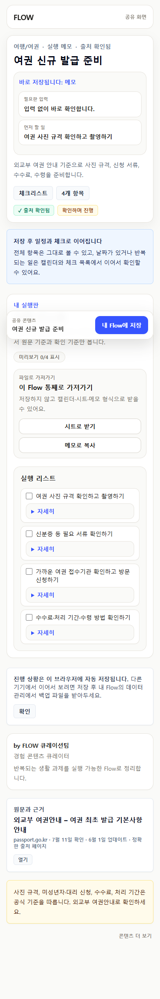
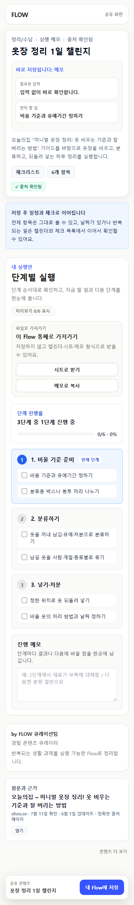
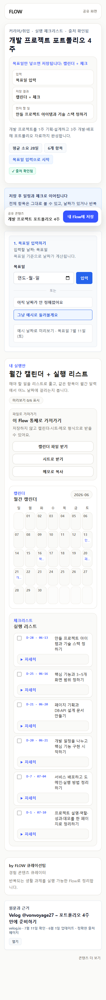
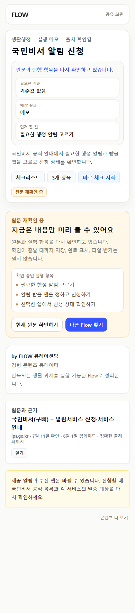
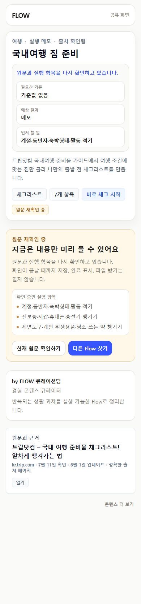
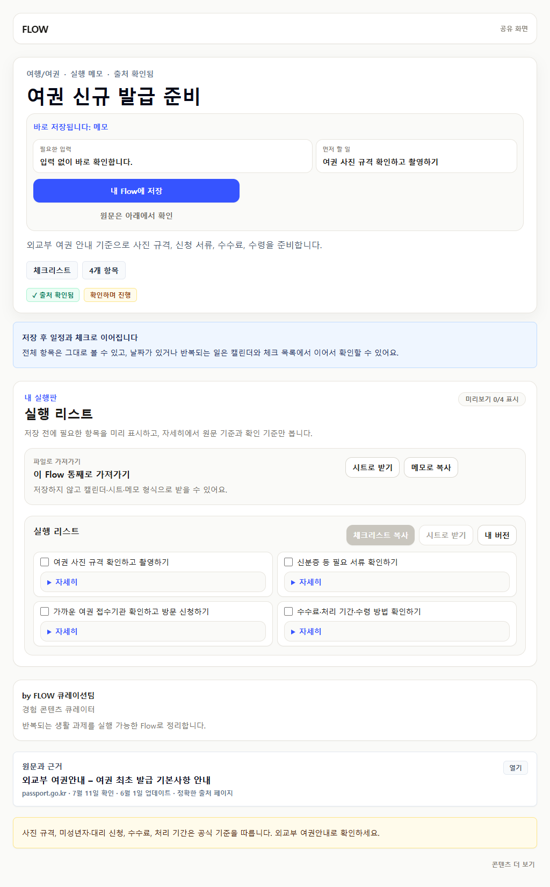
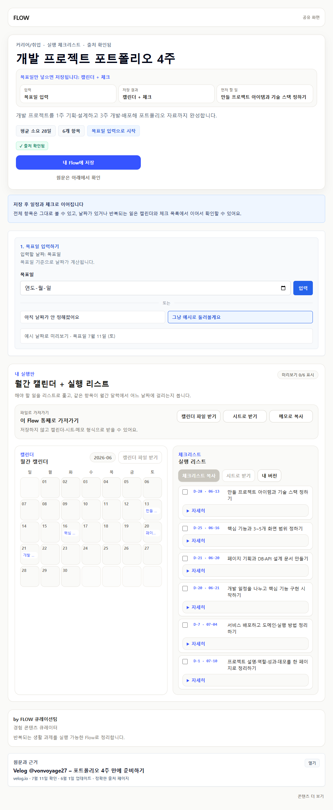
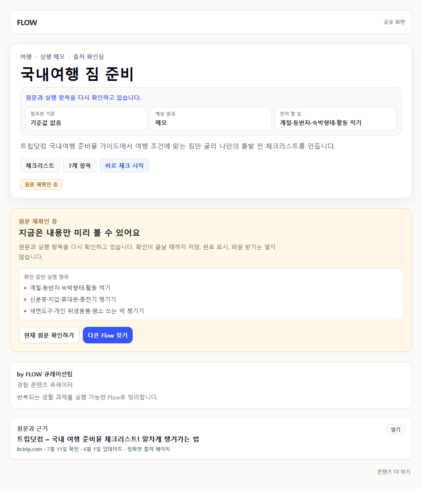

링크가 열린다는 이유만으로 공개 승인하지 않았습니다. 현재 원문이 실행 항목을 지지하는지, FlowMe에서 저장·완료·내보내기까지 열 가치가 있는지를 분리해 판단했습니다.
| Flow | 판정 | 교정 핵심 | 공개 동작 |
|---|---|---|---|
| 여권 신규 발급 준비 | 승인 | 인화 사진 규격 3.5×4.5cm, 6개월 이내, 온라인 픽셀 규격 분리 | 저장·체크·내보내기 |
| 옷장 정리 1일 챌린지 | 승인 | 개인별 기준·유예·처리 방식으로 교정, 깨진 단계 안내 복구 | 저장·체크·내보내기 |
| 개발 프로젝트 포트폴리오 4주 | 승인 | 기획→DB/API→개발→배포→한 페이지 포트폴리오로 원문 충실화 | 저장·체크·내보내기 |
| 국민비서 알림 신청 | 미리보기 유지 | 과거 서비스 수·인증 경로 제거, 현재 목록과 앱 기준으로 최신화 | 저장·체크·내보내기 차단 |
| 국내여행 짐 준비 | 재구성 유지 | 출처에 없던 D-7 예약·관광 동선 제거, 조건별 짐 체크로 변경 | 저장·체크·내보내기 차단 |

실행판 하나만 남기고, 현재 공식 규격에 맞춘 4개 행동을 보여줍니다.

사용자 기준과 유예기간을 먼저 정하고 단계별 실행으로 이어집니다.

목표일을 넣으면 4주 일정과 실행 목록이 같은 모델로 계산됩니다.

내용은 최신화했지만 반복 실행 가치 검토가 끝날 때까지 읽기만 허용합니다.

원문과 맞지 않던 일정 기능을 제거했으며 차별성 검토 전에는 저장을 열지 않습니다.

저장 CTA, 실행 목록, 출처 카드가 한 흐름으로 보이며 중복 본문은 없습니다.

원문 순서를 날짜와 실행 항목으로 함께 보되 같은 항목을 별도 본문에서 반복하지 않습니다.

보류 이유와 확인 중인 항목만 보여주고 저장·체크·export는 노출하지 않습니다.
공개 52개 visible text 손상 0, 이번 시나리오의 오래된 문구 0, 승인 페이지 중복 실행 표면 0, 검토 전용 저장·export·체크 0, 390px·1024px 가로 넘침 0입니다.
링크 감사의 수동 검토 10건과 source review 대기열 37개가 남아 있습니다. 관찰 사용자 세션도 1/15이므로 상용 완성 판단은 아직 이릅니다.